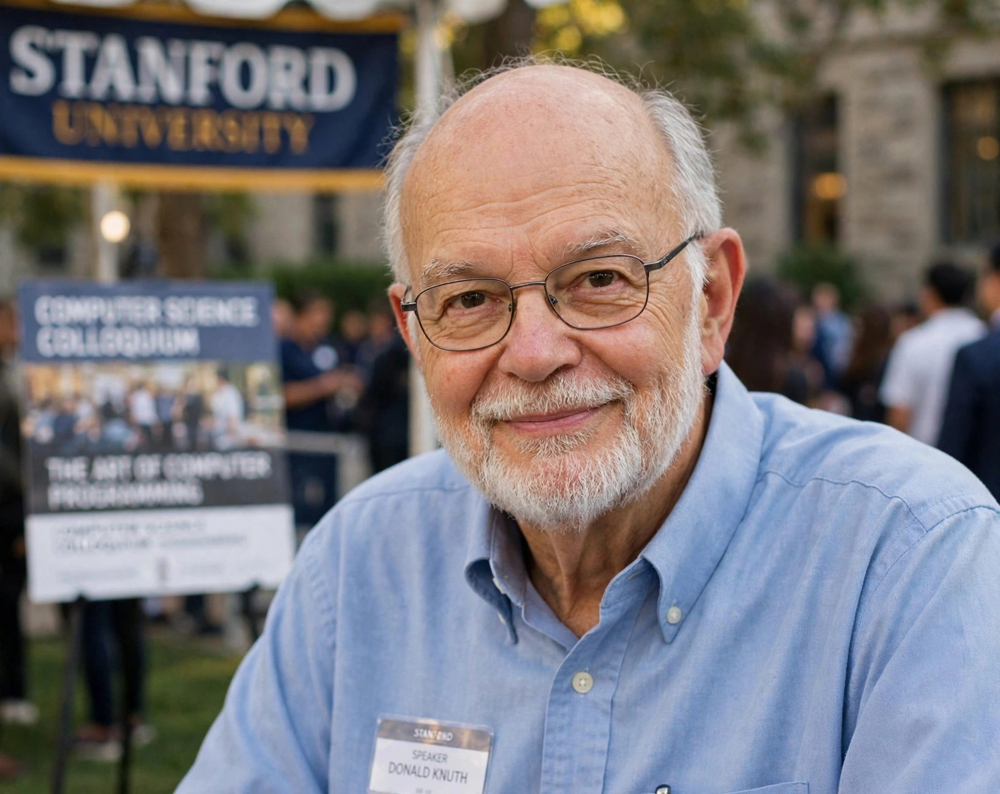

Donald Knuth

[Image: Donald Knuth, portrait photograph]
Donald Ervin Knuth (born 1938) is an American computer scientist and mathematician, a professor emeritus at Stanford University, called the 'father of the analysis of algorithms'. He is the author of the multi-volume work The Art of Computer Programming (begun 1962, still unfinished), considered a definitive reference on algorithms and programming.
Knuth also created the TeX typesetting system (1978) and the Metafont font-description language, out of frustration with the typesetting of his own books — tools that became the standard for scientific publishing — and the WEB literate-programming system.
Work and style
Volume 1 of TAOCP appeared in 1968; planned volumes cover fundamental, seminumerical, and combinatorial algorithms, with sorting and searching in Volume 3. Knuth famously paid a $2.56 'hexadecimal dollar' reward for each error found in his books, and his cheques became prized collectibles (he stopped real cheques in 2008 after fraud).
He coined much of algorithm analysis's vocabulary (popularising Big O notation), created the LR parsing theory papers, the Knuth–Morris–Pratt string-search algorithm, and the TeX lion and Computer Modern fonts becoming cultural icons of computing. His Stanford lectures and annual 'Christmas tree' lectures continue his public teaching.
Views
Knuth stopped using email in 1990 to protect deep-work time, announcing he would answer mail in batches via his assistant — an oft-cited statement on attention. He regards computer science as an art form and programming as a literary act.